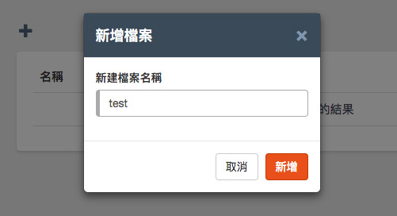

Blockly 程式積木
有別於目前「免註冊」的 Webduino Blockly ( https://blockly.webduino.io )，雲端平台的 Webduino Blockly 具備存檔與共享檔案的功能，並提供豐富的電子元件與傳感器模組 ( 空氣懸浮粒子 ( PM2.5 ) 偵測、電子磅秤、條碼機、OLED、LCD、MP3 播放器 )，此外，也可以透過 Google 試算表、線上繪製圖表...等網頁服務，完成進階的創意應用。
建立新檔案
進入雲端平台首頁，點選 Webduino Blockly 程式積木，即可進入檔案管理畫面。

點選上方的「+」號，輸入檔名之後就可以建立新的編輯檔案。

新檔案建立完成後，點選檔案名稱，便可開始編輯檔案。

檔案編輯均會自動儲存，若尚未儲存完成，關閉檔案的時候會出現「尚未儲存完成」的提示訊息。

分享檔案
點選每個檔案後方的「分享」圖示，會打開檔案分享的設定。

分享功能有以下四個選項，透過這四種分享方式，不論是個人開發、團隊開發，甚至是應用在課程教學，都相當方便實用。
- 不分享：只有自己能使用與瀏覽
- 指定使用者分享：輸入指定使用者的 E-Mail，讓指定使用者可以瀏覽檔案
- 公開分享：所有人可以在「公開的檔案」找到該檔案並進行瀏覽
- 非公開分享：無法於公開的檔案找到該檔案，但只要知道檔案連結便可瀏覽檔案
操作與編輯介面
基本上 Webduino 雲端平台的 Blockly 和「免註冊」Webduino Blockly 在介面上大同小異，左邊是積木功能區，右上方則是所一些好用的輔助工具，而雲端平台 Blockly 因為具備了註冊和檔案管理的功能，因此在右上方額外多了「登出」和「檔案管理」的按鈕。

左側的積木功能也額外新增了「OLED 螢幕」、「LCD 螢幕」、「細懸浮微粒」、「Google 試算表」...等好用的積木模組。

技術支援
若在操作或檔案分享上遇到任何問題，可透過以下幾種方式聯繫技術人員，尋求技術協助：
- Webduino 粉絲團：https://www.facebook.com/webduino
- 技術討論社團：https://www.facebook.com/groups/webduino
- 客服信箱：webduino.io@gmail.com
- 客服電話：886-7-3388511
如果您還想了解更多，可以參考：
1. 完整教學範例：https://webduino.io/tutorials.html
2. Blockly 教學：https://goo.gl/Y8sRkl
3. 產品總覽：https://webduino.io/buy.html
4. 露天賣場：http://goo.gl/0Dj9ip
2. Blockly 教學：https://goo.gl/Y8sRkl
3. 產品總覽：https://webduino.io/buy.html
4. 露天賣場：http://goo.gl/0Dj9ip